Lines and Circles
1
Lines and Circles Line math
Did you see the pictures? A bridge made with upright pillars and slanted supports. Qutb Minar and the iron pillar in front of it, standing straight
7


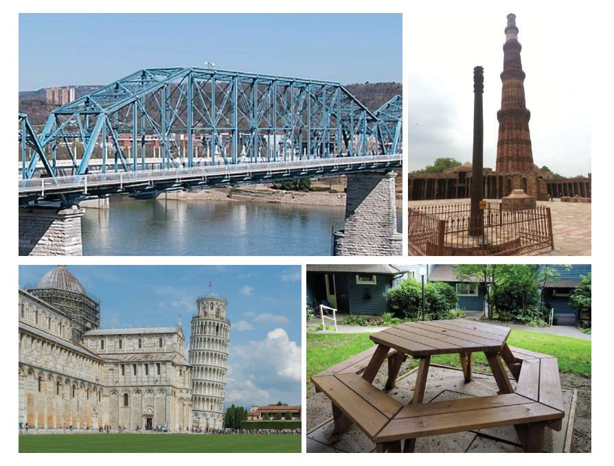
Lines and Circles
1
Lines and Circles Line math
Did you see the pictures? A bridge made with upright pillars and slanted supports. Qutb Minar and the iron pillar in front of it, standing straight
7


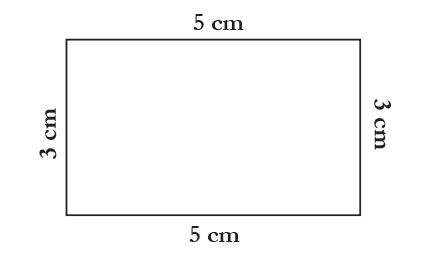
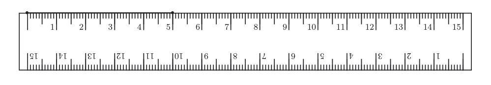
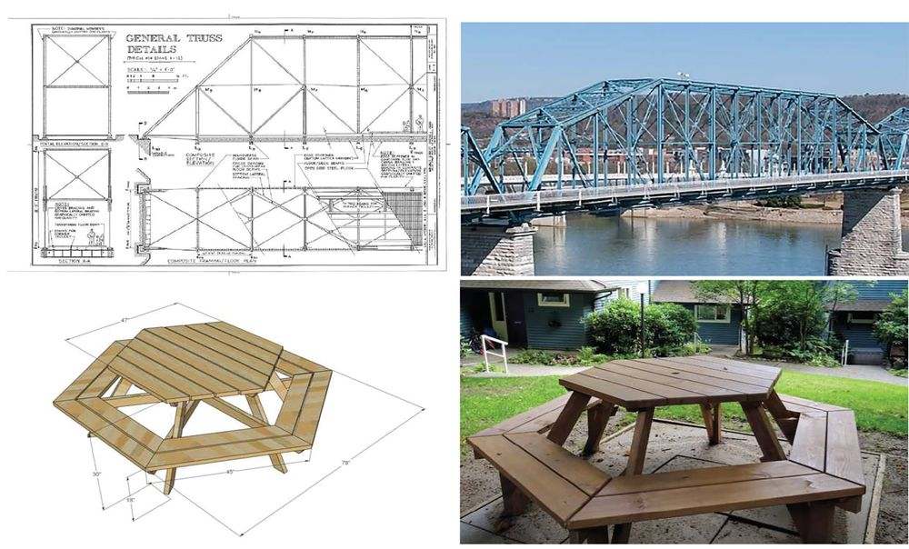
Standard V - Mathematics
The Leaning Tower of Pisa, built though vertical, but tilting in time A table made with planks of straight and slanted edges, and legs straight and slanted. Before actually building these, bridge or table, accurate plans must be drawn:
Let us also start to draw. First a rectangle:
First, let’s draw the bottom line using a scale.
8


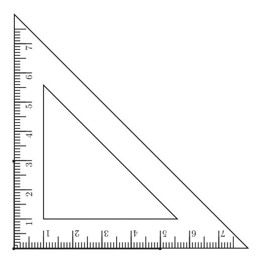
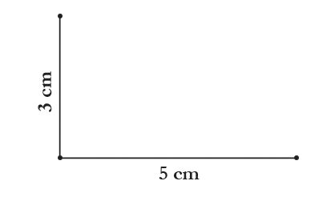
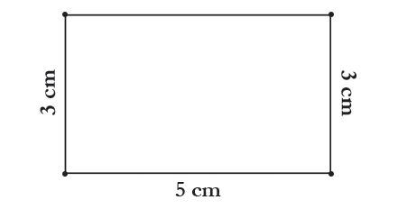
Lines and Circles
Now, from one end of this line, let’s draw upward another line of 3 centimetres. For this, we are going to use a set square from the geometry box.
That makes half the rectangle.
Now in the same way draw a 3 centimetre line, straight up from the other end. By joining the tops of the two vertical lines, we have our rectangle:
Don’t you have a question here? We didn’t actually measure the top line, did we? Would it be also 5 centimetres?
9


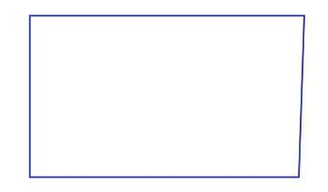
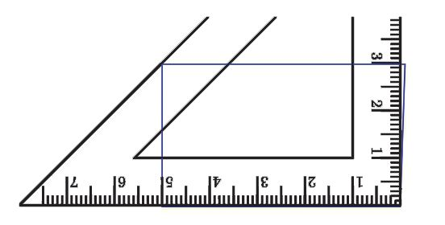
Standard V - Mathematics
Measure it and check. If you have drawn the left and right sides without any slant, it will also be 5 centimetres. Now look at the picture.
Are the left and right lines exactly straight up? The right side seems to be a little off, doesn’t it? Let’s check it with a set square.
Now measure the bottom side and the top side. Are they of equal length? Let’s draw another picture. Draw a long line and mark off 5 centimetres from the left.
10


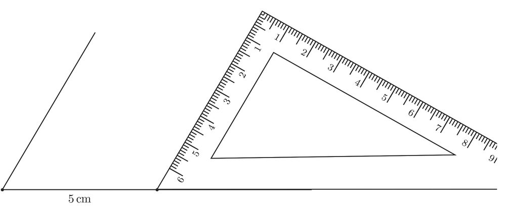
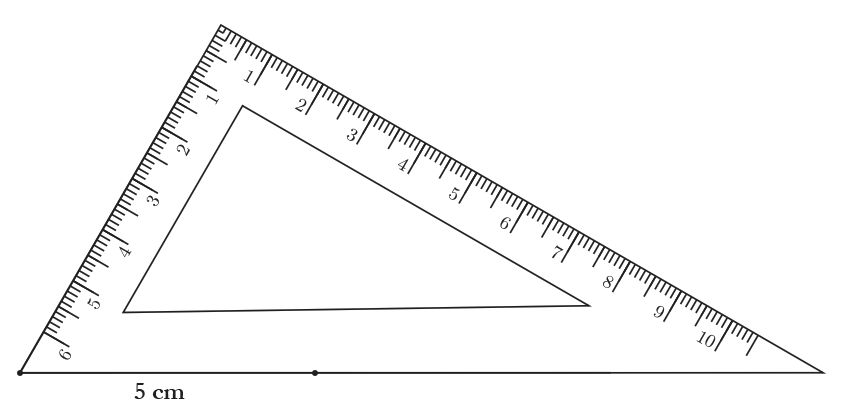
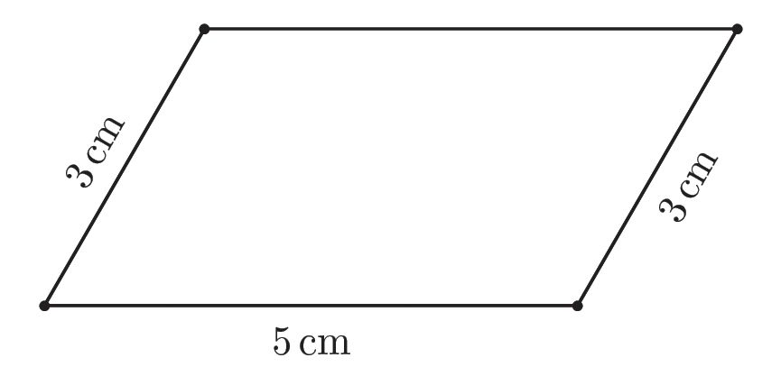
Lines and Circles
Place the longer set square at the left end as in the picture below and draw a line.
Now slide the set square 5 centimetres to the right and draw another line like this.
Mark off 3 centimetres on both the slanted lines and erase the rest of the lines. Draw a line joining these two ends. Erase the part of the bottom line also beyond the 5 centimetre mark.
Measure the top side. Isn’t it also 5 centimetres?
11


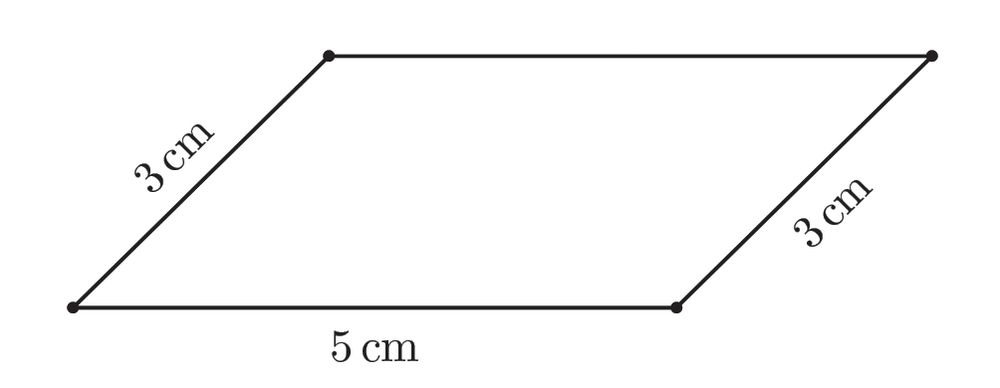
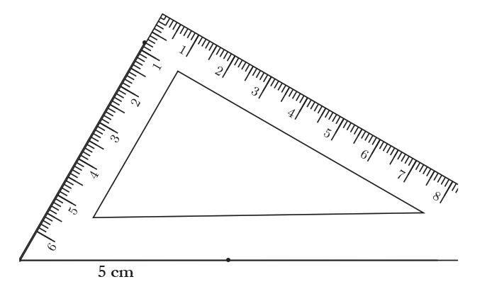
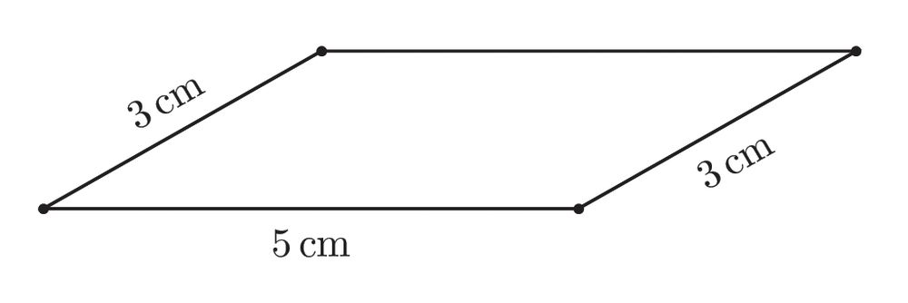
Standard V - Mathematics
If we use the other corner of the set square instead, we will get a picture like this.
Try it! We can draw another picture as given below, using a corner of the other set square:
Measure the top sides of each picture. Are they 5 centimetres long? In an earlier picture, when the right side was a little tilted, the length of the top side changed. But in all the three pictures drawn now, though the left and right sides were tilted, the top length didn’t change Will the length of the top side remain unchanged even if we tilt the left and right sides to any extent? Suppose we put the set square at the ends of the 5 centimetre line like this?
12


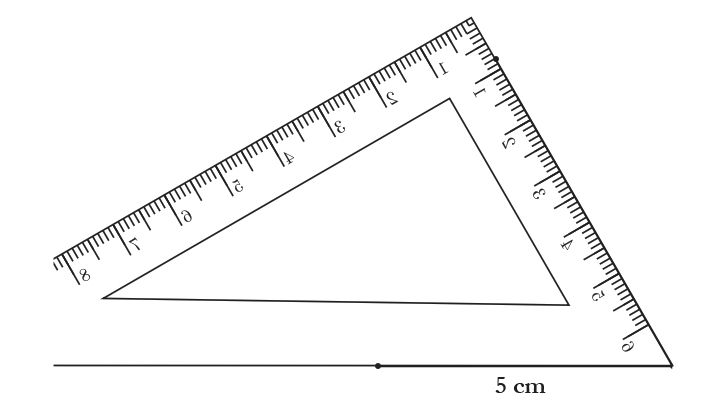
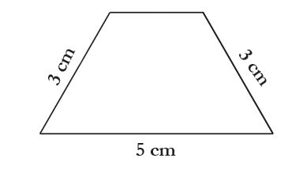
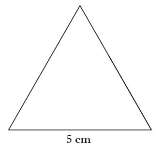
Lines and Circles
How about marking 3 centimetres off from both the slanted lines and joining the ends?
If we extend the left and right sides, we get a triangle like this.
We have measured the slanted sides of the triangle. Now, using a scale and set squares, try drawing these pictures.
13


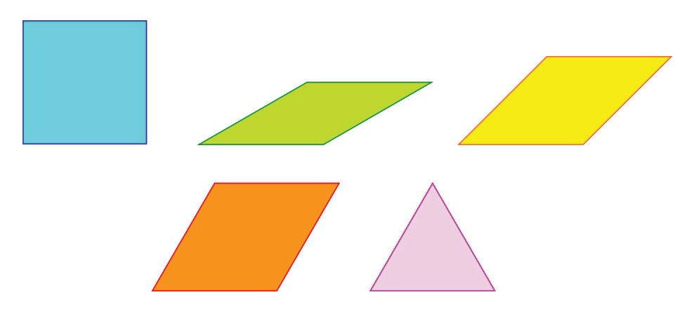
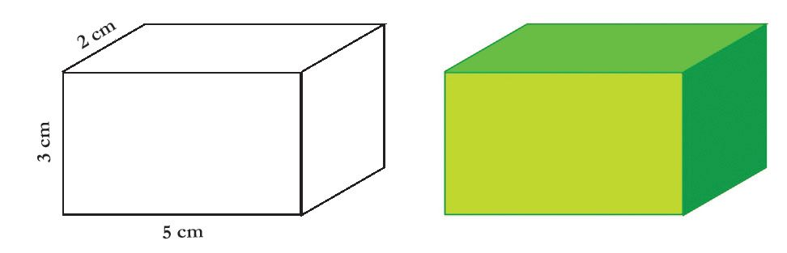
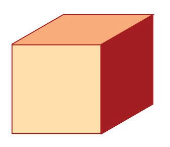


Standard V - Mathematics
1. All the lines in the pictures below are of 3 centimetres length. Draw and colour them: .
2. Draw the first picture with lengths as shown and then colour it as in the second picture.
3. Draw this picture.
14


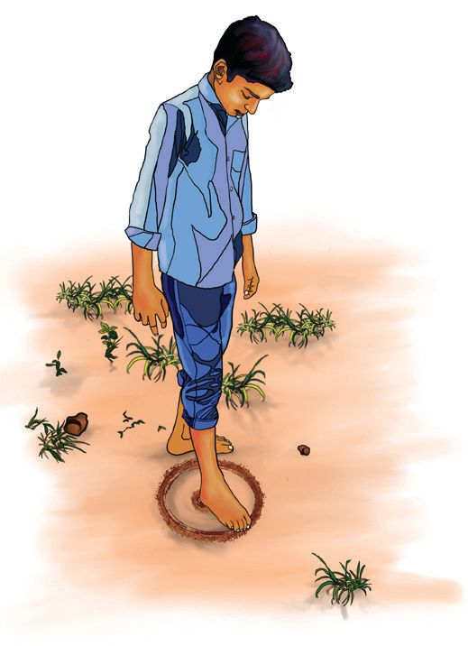
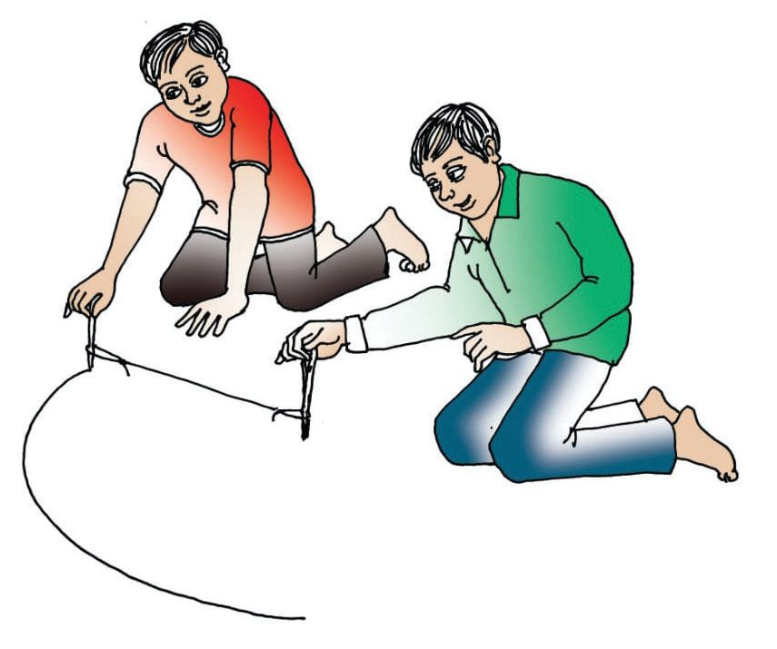
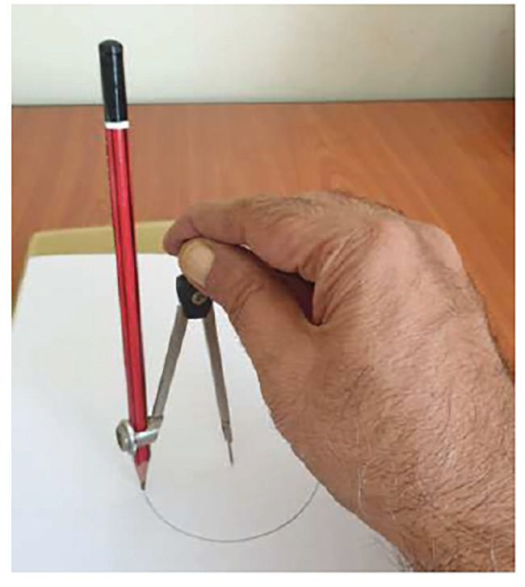
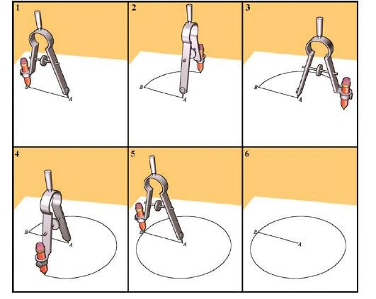
Lines and Circles
Circle Math Isn’t it easy to draw a circle ? We can use coins or bottle caps to draw small circles. If we want a bigger circle, then a bangle or the lid of a tin etc. can be used. There’s a tool in the geometry box to draw circles of any size we want. It’s called a compass.
When we draw a circle like this, the distance between the legs of the compass shouldn’t change in between; it should be the same from start to finish:
15


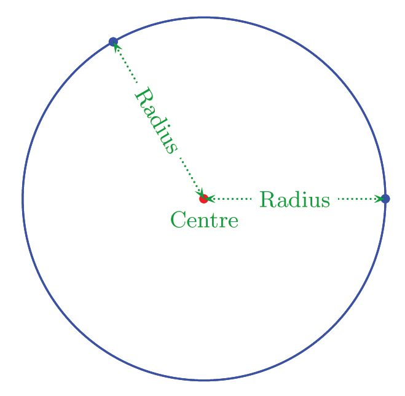
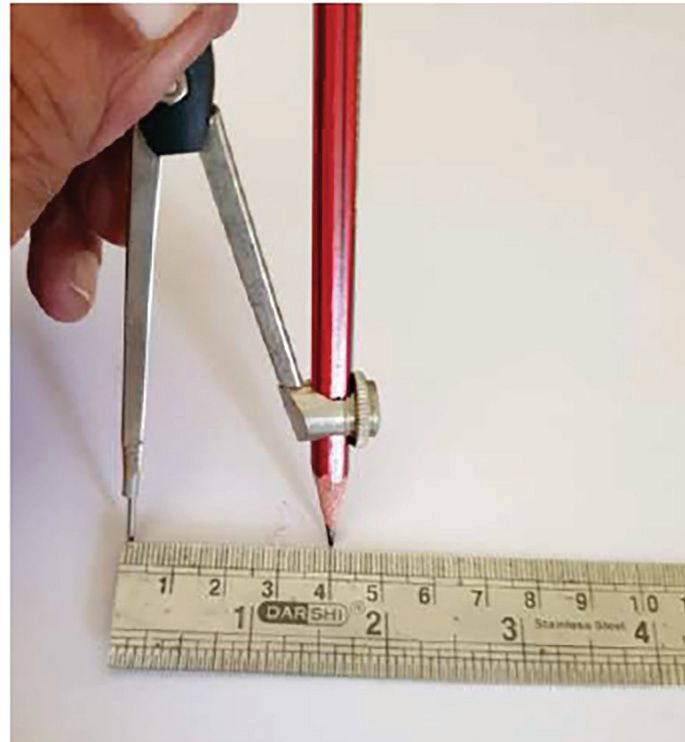
Standard V - Mathematics
When drawing a circle, we keep its needle fixed at a point and then draw with the pencil around it, right ? Throughout this round trip, the pencil point is at the same distance from the needle point. In the language of Math, this can be stated as follows: A circle is the path traced by a point moving at the same distance from a fixed point
Circle is the name of the round shape in the language of Math. There are many concepts related to it. •
The unmoving point in the middle is called the ‘centre of the circle’
•
The unchanging distance between the unmoving point and the rotating point is called the ‘radius of the circle’.
So, how do we draw a circle of radius 4 centimetres?
16

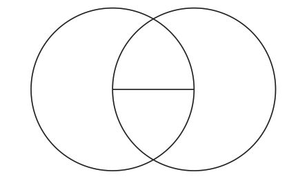
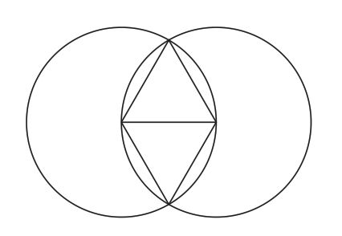
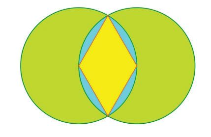
Lines and Circles
Now let’s see how we can create pictures by drawing many circles. Draw a line, not too long. Draw circles with the end points of the line as the centres; with the length of this line as the radius.
Draw lines from the end points of the first line to the points where these circles cut each other.
ST-355-2-MATHS (E)-5-VOL-1
Now try colouring the picture as given below.
17


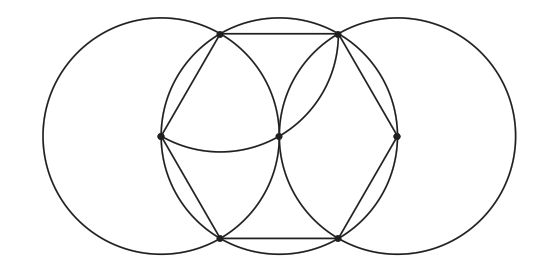
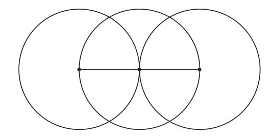
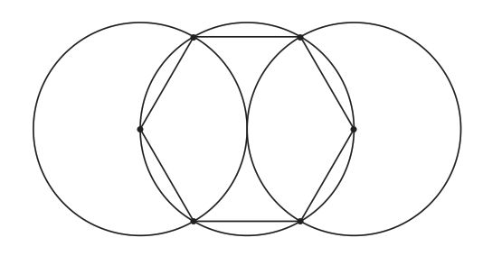
Standard V - Mathematics
Let’s try another one. Draw two circles as before. Extend the line to the right till it meets the circle on the right. With this point as centre, draw another circle of the same radius.
You can erase the first line now. Do you see four points where the circle in the middle is cut by the other two? Joining all these points gives a picture like this.
With one of the six points on the middle circle as centre and without changing the radius used till now, draw a piece of a circle within the middle circle, as given below.
18


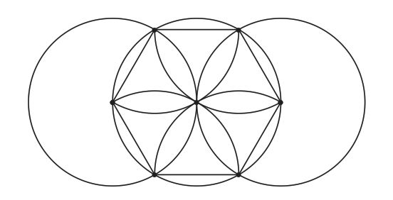
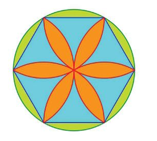
Lines and Circles
Take three more points as centres and draw pieces of circle like this. (If you find that difficult, draw full circles and later erase the pieces outside the middle circle)
Now you can erase the parts outside the middle circle and colour the picture like this.
19


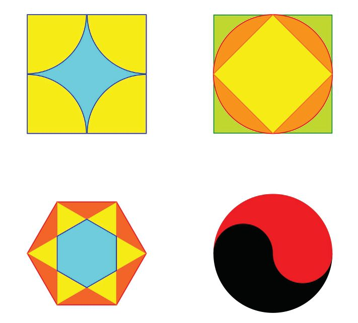

Standard V - Mathematics
Try drawing the pictures below.
20